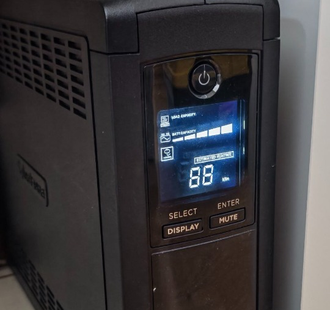
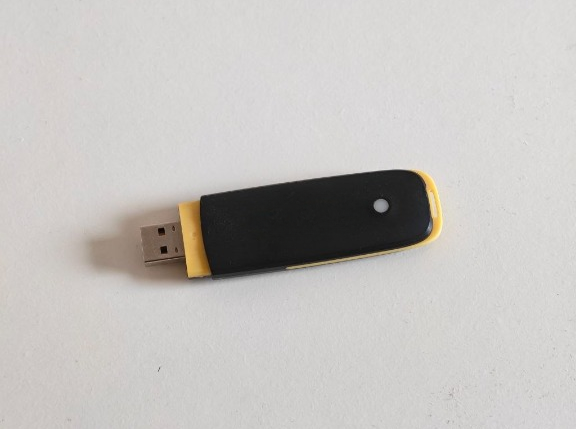
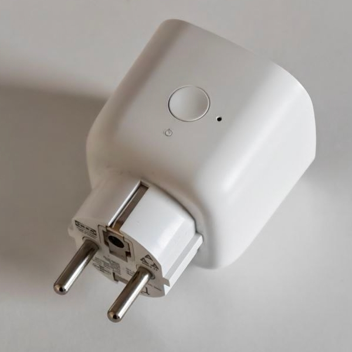
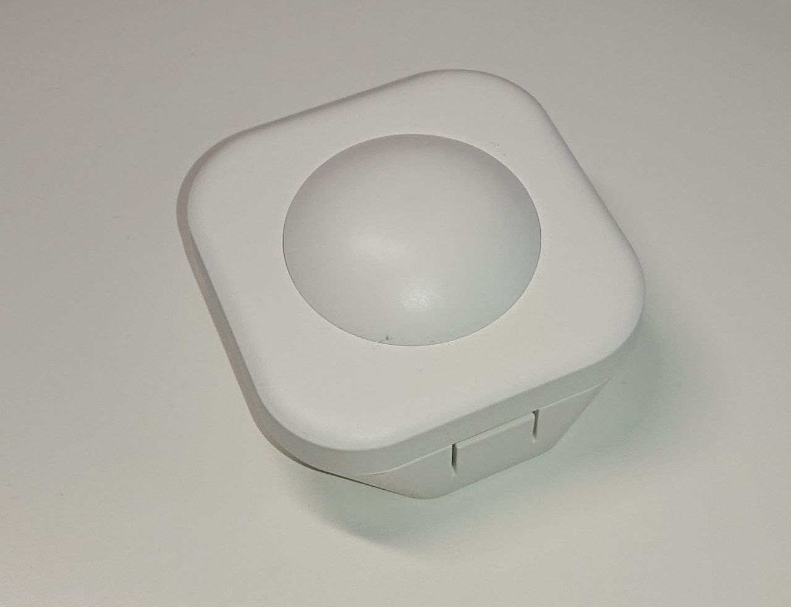
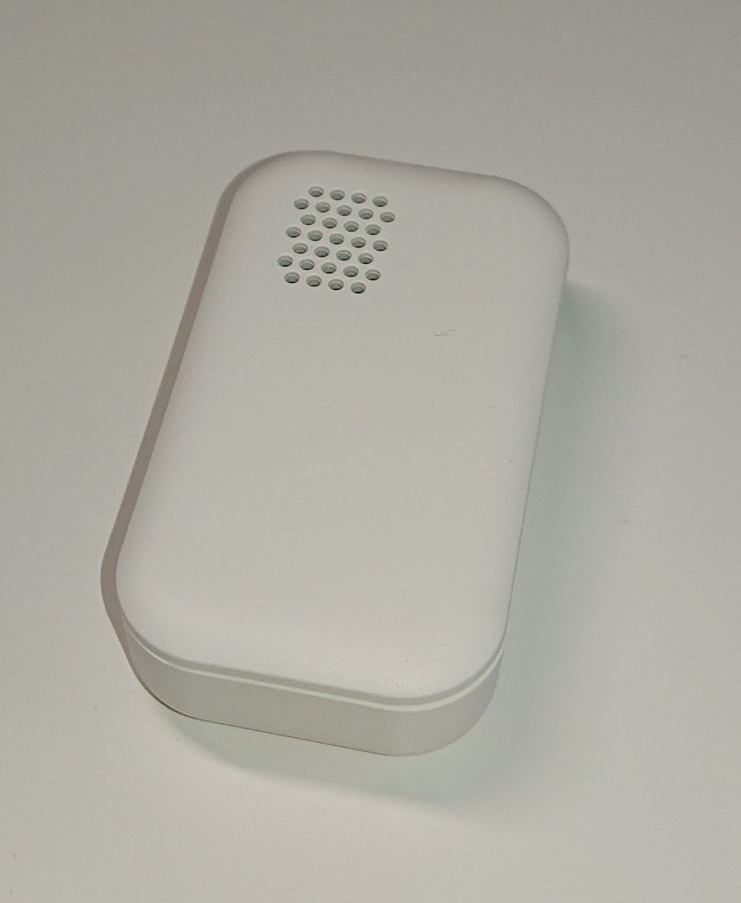
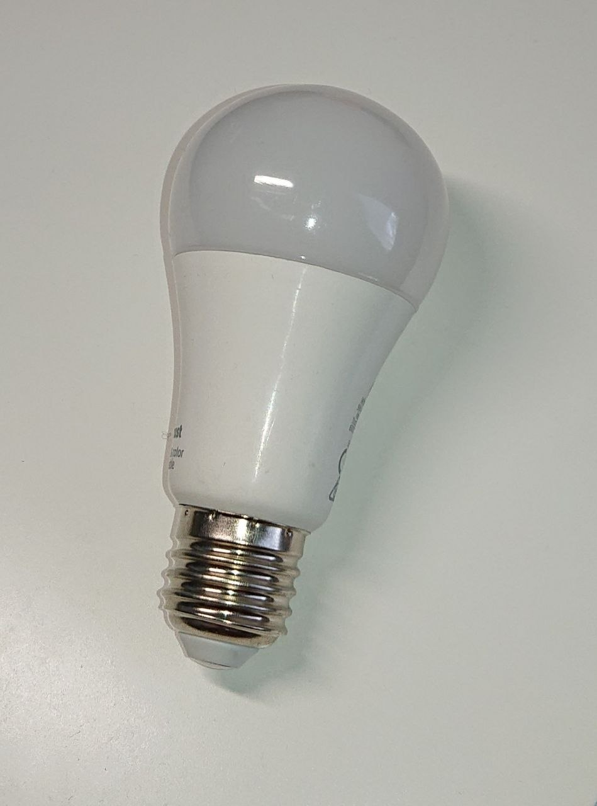
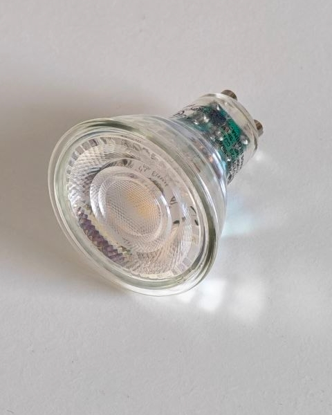
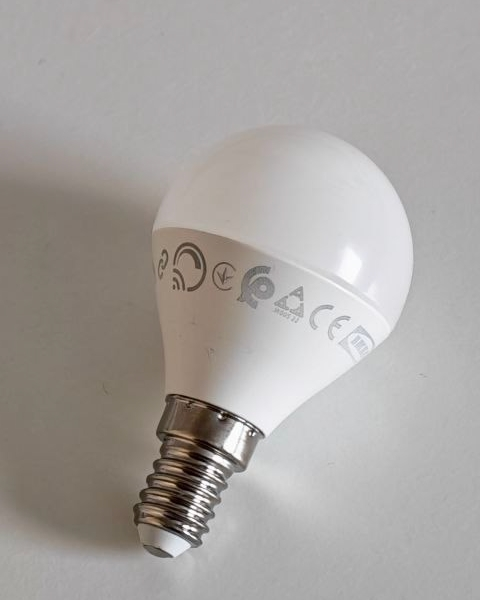
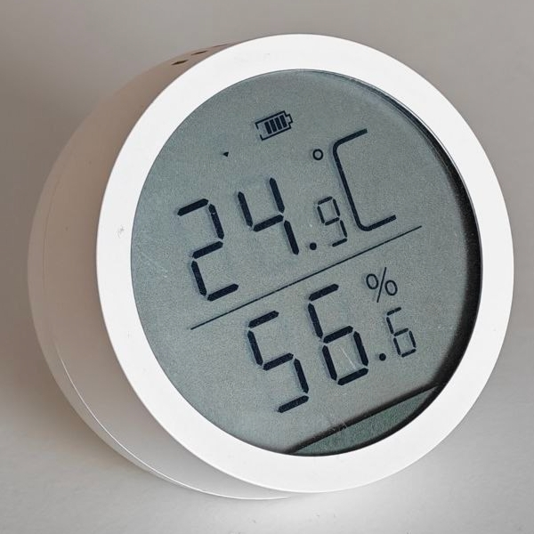
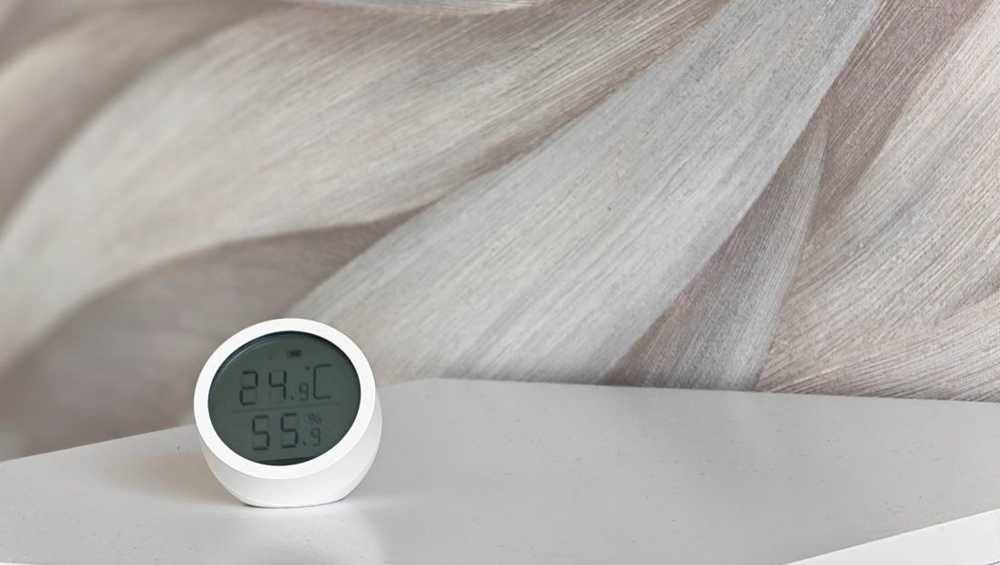

Prissättning
Vi anskaffar alla nödvändiga enheter för din räkning utan eget påslag eller extra avgifter – du betalar endast enheternas faktiska inköpspris. Alla priser nedan inkluderar mervärdesskatt (inkl. MOMS 25,5 %). Dina totala kostnader består endast av enheternas faktiska inköpspris samt installations- och programmeringsarbete. Nedan kan du se exempel på typiska komponenter och deras vägledande priser:
Huvudenhetspaket och reservsystem
| Bild | Enhet | Uppskattat pris |
|---|---|---|
 |
Server (färdigt paket) Systemets hjärna, fungerar helt lokalt. Innehåller processor, minne och hårddisk.
*Om du redan har en lämplig dator (minst CPU, 4 Gt RAM, 64 Gt lagringsutrymme), kan vi installera systemet på den. Då sparar du anskaffningskostnaden för en ny enhet helt.
ℹ️ Installationskrav: Servern kräver en kontinuerlig anslutning till lokalnätet (Ethernet/Wi-Fi) och en ledig USB-port för koordinatorn.
|
Ca €350 |
 |
Zigbee-koordinator (USB-dongel) En nödvändig enhet som skapar ett lokalt trådlöst nätverk för att ansluta trådlösa enheter och skapa olika automationsscenarier.
Denna enhet skapar ett eget smarthemsnätverk (Zigbee/Thread) – det belastar inte och är inte beroende av hemmets vanliga Wi-Fi-anslutning.
|
Ca €35 |
 |
UPS-reservströmkälla (Valfri) Säkerställer avbrottsfri drift för centralenheten under korta strömavbrott och skyddar utrustningen mot spänningstoppar. |
Ca €120 |
 |
4G/5G-router med reservanslutning (Valfri) Mobilnätrouter som fungerar antingen som hemmets primära internetanslutning eller som en automatisk reservkanal om det fasta nätet går ner.
Feltolerans: Om det fasta internet går ner kan systemet gå över till att använda en reservanslutning via SIM-kort, så att du fortfarande får viktiga aviseringar och fjärranslutning till systemet med din telefon.
|
Ca €80 - €150 |
Kringutrustning, sensorer och ställdon (Efter dina behov)
| Bild | Enhet | Uppskattat pris |
|---|---|---|
 |
Smart eluttag, 16A Belastningsstyrning och övervakning av elförbrukning.
Lämplig för belastningar på max 3,6 kW. Möjliggör styrning av belastningsanslutningen utifrån börselpriser.
|
Ca €20 per st |
 |
Rörelse- och ljusstyrkesensor För automation och hemsäkerhet.
Automatisk styrning av belysning eller andra verkställande enheter baserat på rörelsedetektering och rådande ljusmängd.
|
Ca €25 per st |
 |
Vattenläckagevakt (sensor) Förebyggande skydd mot vattenskador.
När sensorn upptäcker ett läckage skickar systemet en avisering. Med hjälp av kompatibla enheter kan systemet även stänga huvudvattenventilen automatiskt.
|
Ca €25 per st |
 |
Smartlampa, E27-sockel Smart belysningsstyrning och stämningsskapande.
Möjlighet att justera ljusstyrka (dimring) samt färgtemperatur från varmt till kallt vitt ljus efter situation.
|
Ca €15 per st |
 |
Smartlampa, GU10-sockel Styrning av spotlightbelysning och infällda spottar.
Möjlighet att justera ljusstyrka (dimring) samt färgtemperatur från varmt till kallt vitt ljus efter situation.
|
Ca €20 per st |
 |
Smartlampa, E14-sockel Smart styrning av mindre belysningsarmaturer och kronljus.
Möjlighet att justera ljusstyrka (dimring) samt färgtemperatur från varmt till kallt vitt ljus efter situation.
|
Ca €15 per st |
 |
Temperatur- och fuktsensor med LCD-skärm För övervakning av rumsluft och mikroklimat.
Möjliggör övervakning av rummets temperatur och luftfuktighet. Med hjälp av kompatibla enheter kan informationen användas för automatisk reglering av uppvärmning eller ventilation.
|
Ca €20 per st |

💡 Varför är enhetspriserna uppskattningar?
Eftersom vi inte lägger till något eget påslag på enheternas priser, bestäms det slutliga priset direkt av marknadspriset vid inköpstillfället.
Vi följer marknadsläget och jämför priser i olika försäljningskanaler för att hitta det bästa pris-kvalitetsförhållandet vid installationstillfället.
Exempelpriserna ovan hjälper dig att bilda en så realistisk uppfattning om den totala budgeten som möjligt.
📦 Leveranskostnader: De angivna priserna gäller själva enheterna. Om beställning av enheter från nätbutiker medför leveranskostnader (t.ex. porto), läggs de till på enheternas slutliga pris som de är, utan extra avgifter. Vi strävar dock alltid efter att samlasta beställningar i den mån det är möjligt för att minimera eller undvika leveranskostnader.
ℹ️ Anmärkning om enheternas utseende: Enheterna som visas på bilderna är exempel. Utseende, färg eller storlek på de slutliga sensorerna och enheterna kan variera något beroende på modell och tillverkningsparti.
Installations-, programmerings- och integrationstjänster
Vi erbjuder en helhetstjänst enligt nyckeln i handen-principen. Priserna inkluderar mervärdesskatt (inkl. MOMS 25,5 %):
*Anmärkning: Alla tjänstepriser avser installations-, integrations- och programmeringsarbete. De enheter och komponenter som krävs för systemet faktureras separat enligt faktiskt inköpspris utan extra påslag.
| Tjänst | Pris |
|---|---|
|
Presentation och demosystem Vår expert kan komma på ett möte inom Uleåborgsregionen vid en tidpunkt som passar dig (även helger) och visa på sin egen telefon eller surfplatta hur ett färdigt smarthemsystem fungerar i praktiken. Samtidigt svarar vi gärna på alla dina frågor och hjälper dig att få en uppfattning om vilka möjligheter systemet ger ditt hem. För andra regioner arrangerar vi mötet på distans via ett Teams-videosamtal. |
GRATIS |
|
Planering och behovsanalys Framtagning av ett skräddarsytt vibrationsprojekt och en enhetslista baserat på dina behov. Tjänsten är kostnadsfri om systemet beställs av oss (planeringsdelen krediteras på slutfakturan). |
GRATIS* |
|
Installation, driftsättning och handledning Fysisk installation av enheter, programmering samt instruktion i hur systemet används.
Exempel på genomförande (Lägenhet, ca 80 m²):
Uppskattad arbetskostnad för detta exempelpaket:
ca €290 (enheter anskaffas separat till självkostnadspris).
Vad baseras det slutliga priset på?
Den slutliga arbetskostnaden påverkas av:
|
Enligt objekt |
|
Basanpassning vid driftsättning Anpassning av kontrollpanelen och widgets enligt våra färdiga, testade mallar ELLER användning av ikoner/planritningar som kunden tillhandahåller (förutsätter att kraven uppfylls). |
Ingår i installationen |
|
Utökad grafisk design av användargränssnittet Skapande av helt unika grafiska element, personliga widgets eller husplanritningar från grunden helt enligt kundens specifika önskemål. |
Enligt överenskommelse |
|
Speciallösningar och skräddarsydd automation Planering och genomförande av individuella mjukvaru-, integrations- och hårdvarulösningar för kundens specifika behov. Systemet kan vid behov utökas med nya funktioner eller integreras även med objektets specialutrustning. Genomförande och omfattning bedöms alltid från fall till fall. |
Enligt överenskommelse |
💎 Viisas Koti Premium-support (Valfri)
49 € / årViktigt: Smarthemsystemet är kundens egendom och det tillkommer inga obligatoriska månads- eller årsavgifter för dess användning. Systemet fungerar självständigt efter installationen. Premium-tjänsten är en frivillig tilläggstjänst för kunder som vid behov vill ha expertsupport för att vidareutveckla och utöka sitt system.
- 🔍 Hjälp med enhetsval och budgetering: Vid behov hjälper vi till att utvärdera och jämföra kompatibla enheter från olika nätbutiker utifrån kundens behov (vanligtvis mindre utökningar och enstaka enheter).
- 📞 Konsultationshjälp: Du kan be om råd gällande till exempel utökning av hemautomation, energihantering eller anslutning av olika typer av enheter till systemet. Vi utvärderar genomförandemöjligheter och eventuella kostnader.
- ⚙️ Support vid installation och driftsättning: Om du har skaffat nya kompatibla enheter kan vi vid behov hjälpa till med att ansluta dem till systemet samt med grundläggande konfigurering. Supporten ges från fall till fall och i mån av tillgänglighet.
- 🛠️ Fjärrassisterade systemändringar: Vi kan göra mindre ändringar och finjusteringar i det befintliga systemet via distansanslutning, till exempel gällande inställningar för aviseringar, automationer eller användargränssnitt.
* Anmärkning: Premium-tjänsten omfattar i första hand rådgivning och teknisk support av mindre omfattning. Större projekt, nya integrationer och mer krävande installationsarbeten prissätts separat per projekt.